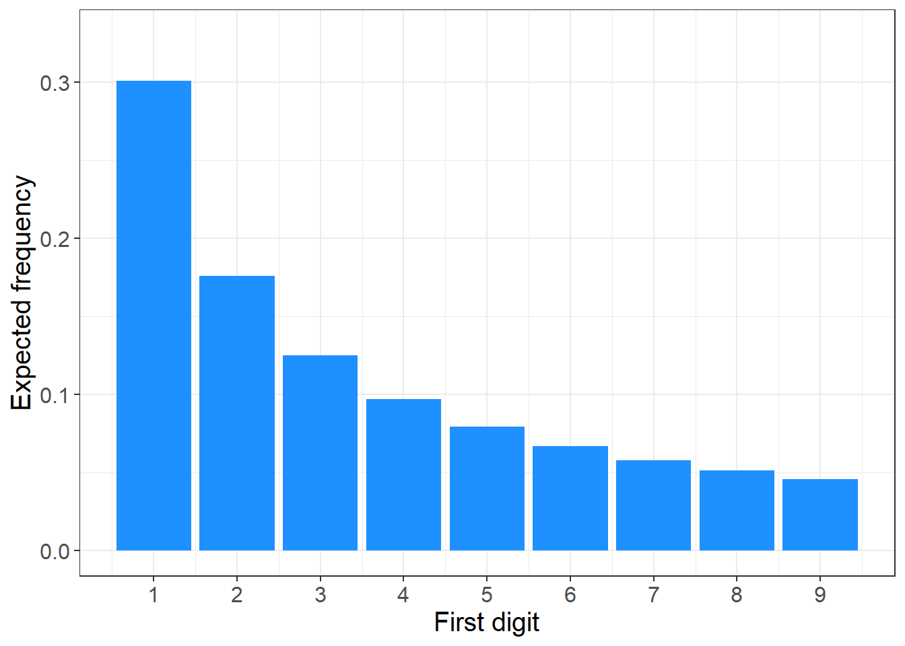
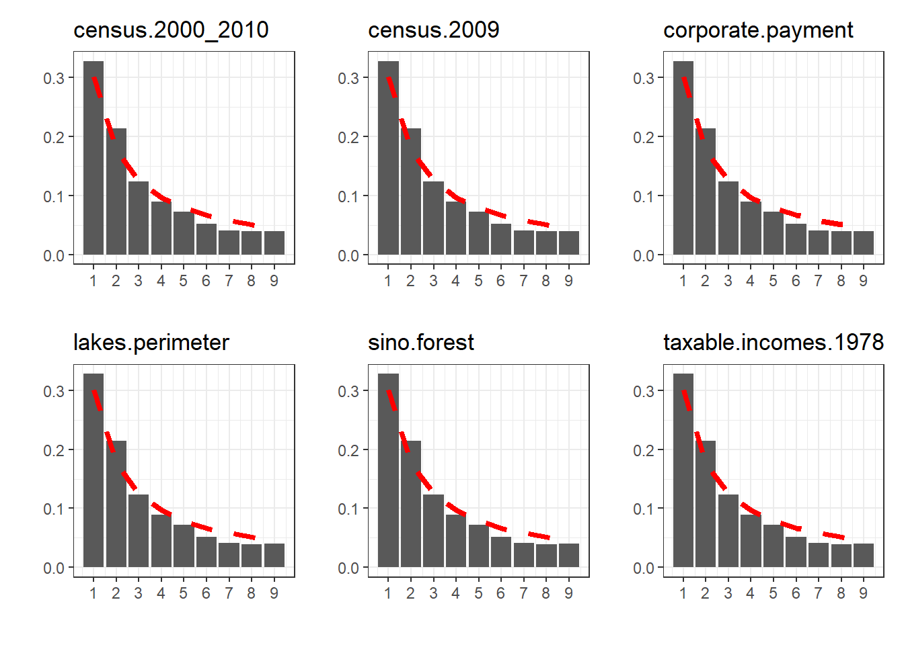
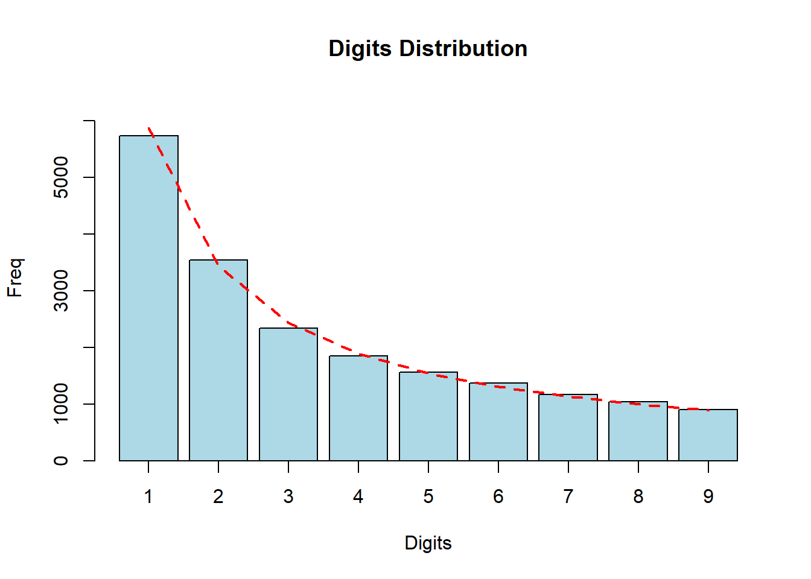
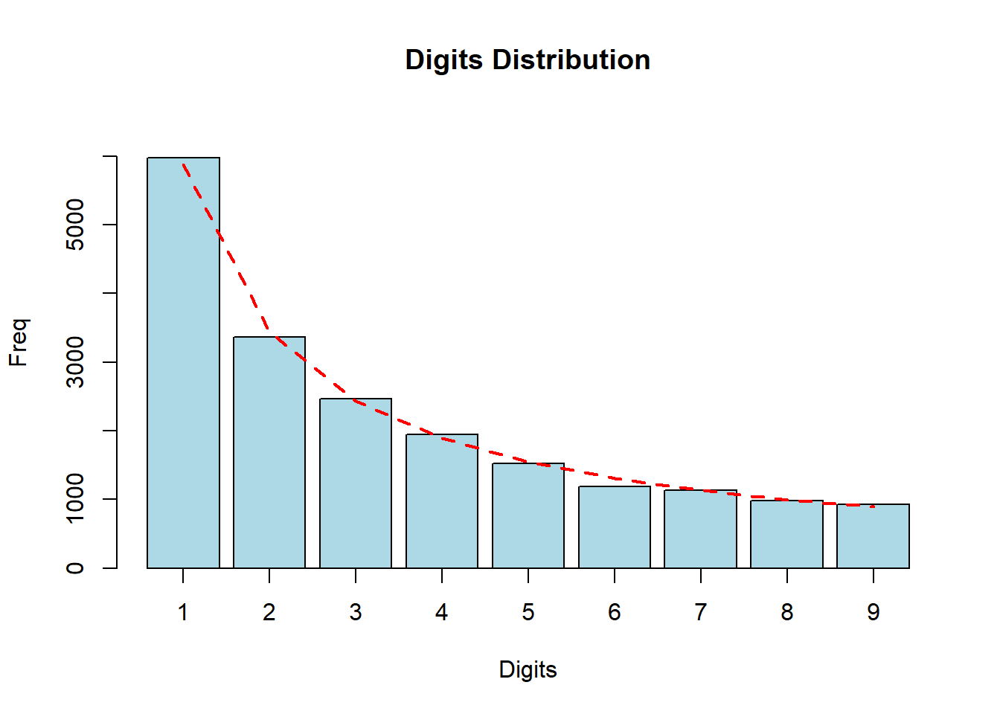
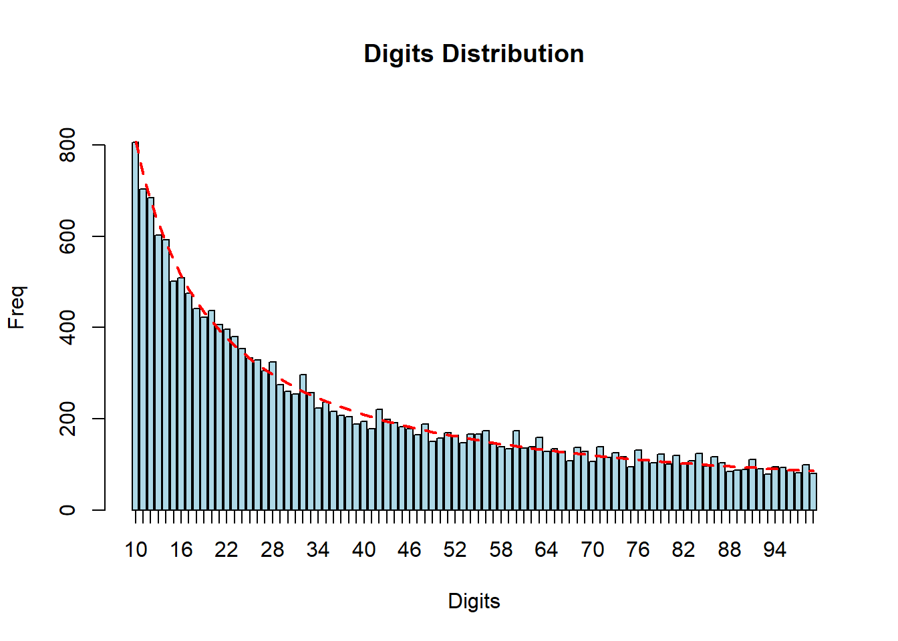
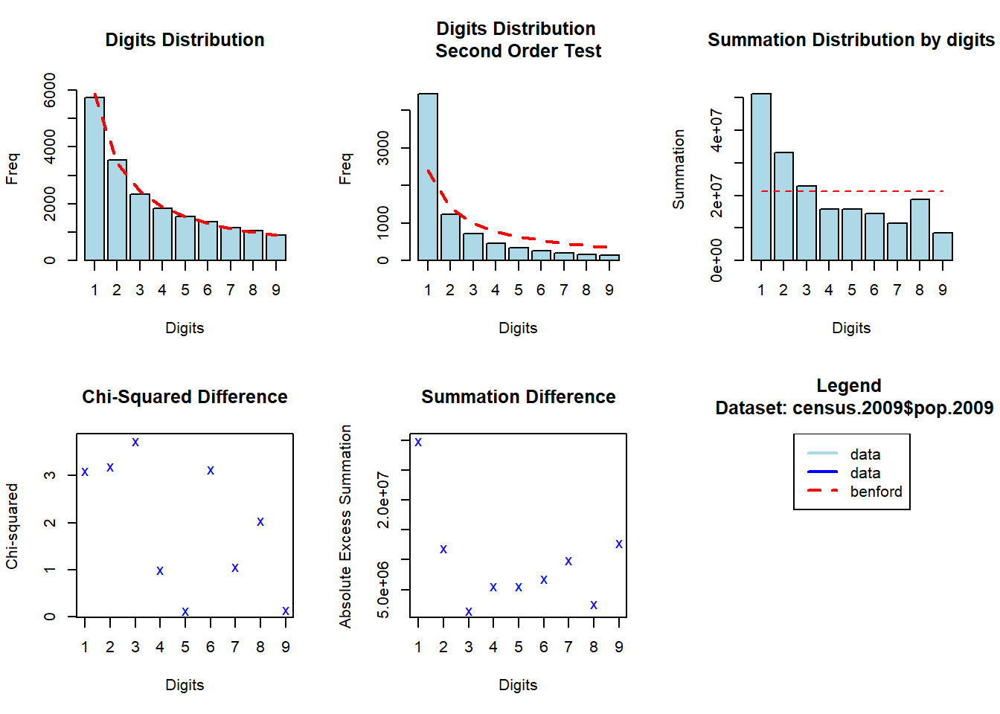
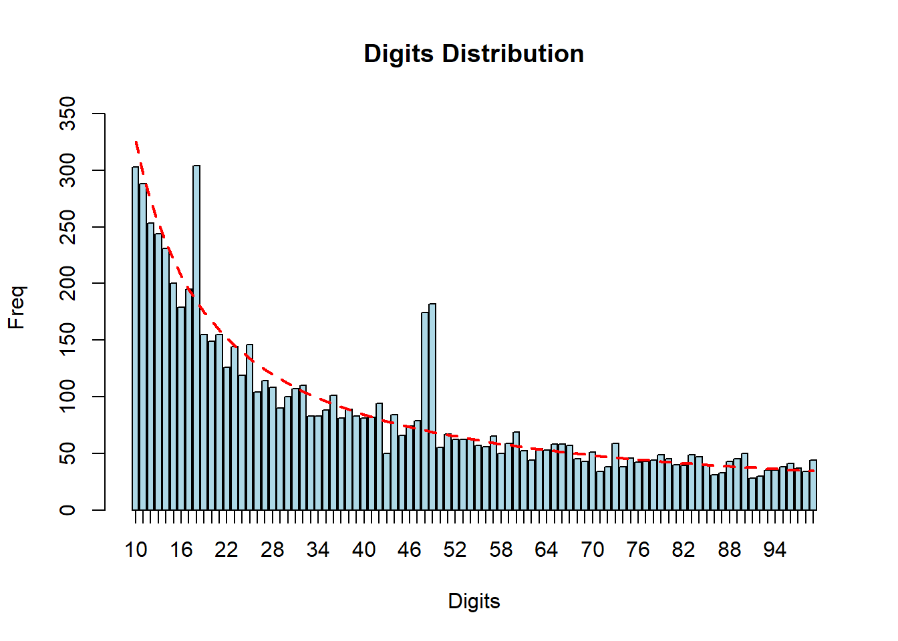
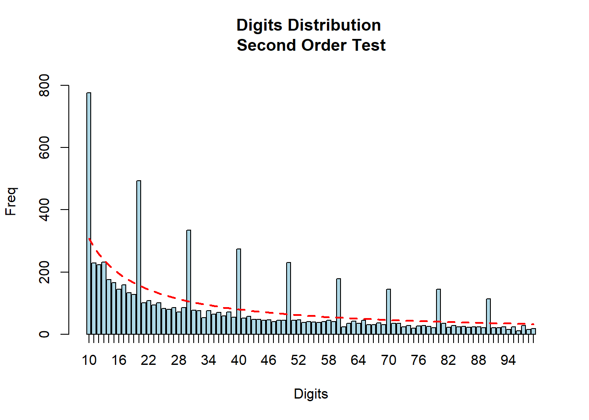
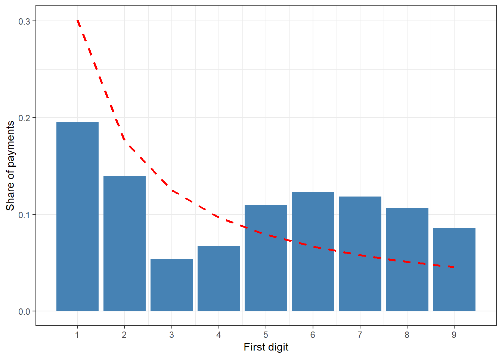
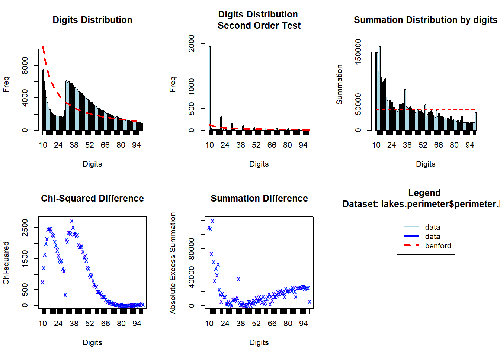

30 Benford Analysis
A public works division passes thousands of bills in a year. Most of the amounts are genuine. But some may be made up. A contractor may inflate a bill. An official may split one large purchase into many small bills, each just below the limit that needs a higher sanction. A clerk may invent a few claims for medical reimbursement. How can an auditor find such amounts among thousands of vouchers, without reading every one?
Benford’s Law gives a quick first answer. It tells us how often each digit (1, 2, 3 and so on) should appear as the first digit of numbers in many real-life data sets. Surprisingly, the digits do not appear equally often. Numbers starting with 1 are far more common than numbers starting with 9, as shown in Figure 30.4. People who make up numbers do not know this. So invented amounts usually leave a mark on the digit pattern, and the analysis can point to it.
The same idea works wherever figures may be adjusted to meet a rule. For instance, eligibility for government assistance often depends on an income below a certain level. Declared incomes may be pushed just below that level. Such figures do not follow the pattern of Benford’s Law, and this is exactly what the analysis can detect.
In this chapter we will first learn the law, where it came from, and the tests built on it. Then we will run the tests in R with the package benford.analysis. We will use it on the payment vouchers of an imaginary works division, where two kinds of unusual amounts are planted. We will then compare ten district offices, one of which has made-up bills. Finally, we will see data on which the law should not be used at all.
30.1 A short history
The Law is named after physicist Frank Benford, who studied it in 1938, in a paper titled The Law of Anomalous Numbers.1 However, it had been noticed more than five decades earlier by the astronomer Simon Newcomb. Newcomb observed that the first pages of books of logarithm tables were more worn out than the later pages. He published a two-page note titled Note on the Frequency of Use of the Different Digits in Natural Numbers in 1881.2
Many researchers continued to work on the law and its extensions. But it took several decades to find a truly practical use for it. In the 1990s, Dr. Mark J. Nigrini, a professor of accounting, applied the law to fraud detection. He studied many data sources, like sales figures, insurance claims and expense reimbursements. He showed how the law could detect overstatement and understatement of financial figures. His work established the law as a practical tool for fraud examiners and auditors.
His reasoning, in simple words, is this. If somebody tries to falsify, say, their tax return, they will have to invent some numbers. When people invent numbers, they tend to use too many numbers starting with middle digits like 5, 6 and 7. They use too few starting with 1.
30.2 Where can Benford analysis help an auditor?
- Expense and reimbursement claims, such as travel, medical or contingent bills, where claimants may invent amounts.
- Vendor payments and invoices, to find made-up invoices or unusual groups of amounts, such as bills split to stay below a limit.
- Revenue and tax data, such as declared incomes or turnover, where figures may be understated.
- Comparing units. Running the test separately for each office, vendor or employee, and looking for the ones that stand out.
- Checking data quality. Unexpected digit patterns can also reveal data entry errors and duplicated records. They can also show data that has been rounded, or generated by a system rather than recorded from real transactions.
30.3 Benford’s Law, properties and extensions
30.3.1 Law of first digit
When thinking about the chance of each digit appearing in the first position, our first guess may be one in nine for each digit. That is, a uniform distribution. This idea was challenged by the Canadian-American astronomer Simon Newcomb in 1881. While turning the pages of a book of logarithm tables, he noticed a curious pattern. The first pages were much more worn out than the later ones.
Later, Frank Benford analysed 20 very different data sets. They included the areas of rivers, the weights of chemical compounds, population figures and more. He found that the chance of a digit appearing first falls steadily from 1 to 9. The digit 1 appears first most often, and the digit 9 least often.
Mathematically, Benford’s Law, or the Law of first digits, states that the probability of a digit \(d\) being the first digit is given by Equation 30.1.
\[ P(d) = \log_{10}\left(1 + \frac{1}{d}\right), \qquad d = 1, 2, \ldots, 9 \tag{30.1}\]
These probabilities are plotted in Figure 30.4. About 30% of numbers should start with 1, and less than 5% with 9.

To test the proposed law, Benford analysed 20 different data sets. He observed that nearly all of them follow the distribution in Equation 30.1.
Let us also check whether the law holds on six different data sets, which come with the R package benford.analysis. We will discuss the package in detail in Section 30.6. The six data sets are listed in Table 30.1.
| Item | Title | Column |
|---|---|---|
| census.2000_2010 | Population data - US - 2000 and 2010 | pop.2000 |
| census.2009 | Population data of Towns and Cities of the US - 2009 | pop.2009 |
| corporate.payment | Corporate payments of a West Coast utility company - 2010 | Amount |
| lakes.perimeter | Perimeter of lakes arround the world | perimeter.km |
| sino.forest | Financial Statemens of Sino Forest Corporation's 2010 Report | value |
| taxable.incomes.1978 | Taxable Income 1978 | taxIncomes |
The share of each first digit in these six data sets is given in Table 30.2, along with the share expected under Benford’s Law. The actual shares are also plotted in Figure 30.5, with the expected shares shown as a dashed red line. All six data sets follow the law closely, except the lake perimeters. We will look at them again in Section 30.9.
| digits | Benford | Census 2000_2010 | Census 2009 | Corporate Payment | Lakes Perimeter | Sino Forest | Taxable Incomes 1978 |
|---|---|---|---|---|---|---|---|
| 1 | 0.301 | 0.309 | 0.294 | 0.318 | 0.151 | 0.299 | 0.328 |
| 2 | 0.176 | 0.180 | 0.181 | 0.161 | 0.069 | 0.161 | 0.214 |
| 3 | 0.125 | 0.127 | 0.120 | 0.110 | 0.217 | 0.126 | 0.124 |
| 4 | 0.097 | 0.098 | 0.095 | 0.083 | 0.182 | 0.091 | 0.090 |
| 5 | 0.079 | 0.066 | 0.080 | 0.102 | 0.131 | 0.083 | 0.072 |
| 6 | 0.067 | 0.066 | 0.070 | 0.060 | 0.093 | 0.070 | 0.052 |
| 7 | 0.058 | 0.054 | 0.060 | 0.050 | 0.068 | 0.052 | 0.041 |
| 8 | 0.051 | 0.055 | 0.053 | 0.050 | 0.050 | 0.070 | 0.039 |
| 9 | 0.046 | 0.046 | 0.046 | 0.066 | 0.039 | 0.049 | 0.040 |

30.3.2 Scale invariance
In 1961, Roger Pinkham showed that the law is scale invariant.3 This means that the law does not depend on the unit of measurement. If it holds for amounts in rupees, it also holds when the same amounts are converted to dollars. If it holds for lengths in kilometres, it also holds for the same lengths in miles.
Let us check this on one of the six data sets, census.2009. It contains the population of towns and cities of the United States, as of July 2009. The left plot of Figure 30.6 shows the first digits of the original data. For the right plot, we multiply every figure by the same random positive number, and test again.


The law holds in both cases. Scale invariance is an important practical property. It means that the test can be applied to amounts in any currency, without adjustment.
30.3.3 First two digits
Nigrini’s work led many scholars and practitioners to use Benford’s Law as a forensic accounting and auditing tool. In 1995, Theodore P. Hill gave a rigorous mathematical explanation of why the law holds.4 His work also covers the significant-digit law. It describes the expected frequencies not only of the first digit, but also of the second and later digits, and of combinations of digits.
The probability of a digit \(d\) appearing in the second position is given by Equation 30.2.
\[ P(d) = \sum_{k = 1}^{9}\log_{10}\left(1 + \frac{1}{10k + d}\right), \qquad d = 0, 1, \ldots, 9 \tag{30.2}\]
Here, \(k\) runs over all possible first digits. The second digits are much closer to uniform than the first digits. The digit 0 appears second about 12% of the time, and 9 about 8.5% of the time.
For the first two digits together, such as 10, 11, …, 99, the probability is simply \(\log_{10}(1 + 1/n)\), where \(n\) is the two-digit number. These probabilities are shown in Table 30.3. Each cell gives the probability of a number starting with a particular pair of digits. The first digit is in the rows and the second digit in the columns. The row totals give back the probabilities of the first digit alone. For example, the probability of a number starting with 10 is the highest, at 4.14%.
| First Digit | 0 | 1 | 2 | 3 | 4 | 5 | 6 | 7 | 8 | 9 | First Digit Freq |
|---|---|---|---|---|---|---|---|---|---|---|---|
| 1 | 4.14% | 3.78% | 3.48% | 3.22% | 3.00% | 2.80% | 2.63% | 2.48% | 2.35% | 2.23% | 30.10% |
| 2 | 2.12% | 2.02% | 1.93% | 1.85% | 1.77% | 1.70% | 1.64% | 1.58% | 1.52% | 1.47% | 17.61% |
| 3 | 1.42% | 1.38% | 1.34% | 1.30% | 1.26% | 1.22% | 1.19% | 1.16% | 1.13% | 1.10% | 12.49% |
| 4 | 1.07% | 1.05% | 1.02% | 1.00% | 0.98% | 0.95% | 0.93% | 0.91% | 0.90% | 0.88% | 9.69% |
| 5 | 0.86% | 0.84% | 0.83% | 0.81% | 0.80% | 0.78% | 0.77% | 0.76% | 0.74% | 0.73% | 7.92% |
| 6 | 0.72% | 0.71% | 0.69% | 0.68% | 0.67% | 0.66% | 0.65% | 0.64% | 0.63% | 0.62% | 6.69% |
| 7 | 0.62% | 0.61% | 0.60% | 0.59% | 0.58% | 0.58% | 0.57% | 0.56% | 0.55% | 0.55% | 5.80% |
| 8 | 0.54% | 0.53% | 0.53% | 0.52% | 0.51% | 0.51% | 0.50% | 0.50% | 0.49% | 0.49% | 5.12% |
| 9 | 0.48% | 0.47% | 0.47% | 0.46% | 0.46% | 0.45% | 0.45% | 0.45% | 0.44% | 0.44% | 4.58% |
| Second Digit Freq | 11.97% | 11.39% | 10.88% | 10.43% | 10.03% | 9.67% | 9.34% | 9.04% | 8.76% | 8.50% | 100.00% |
The first-two digits test is the one most used by auditors. It is much more focused than the first digit test. A spike at a particular pair, say 49, can point directly to a group of suspicious amounts, such as amounts kept just below ₹50,000. We can verify that the law of first two digits holds for the census.2009 data in Figure 30.7.

30.3.4 Second order test
Nigrini and Miller, in 2009,5 introduced another test based on Benford’s Law. The test states the following.
Let \(x_1\), …, \(x_N\) be a data set comprising \(N\) observations, and let \(y_1\), …, \(y_N\) be the observations \(x_i\)’s in ascending order. Then, for many natural data sets, and for large \(N\), the digits of the differences between adjacent observations \(y_{i+1} - y_i\) is close to Benford’s Law. Large deviations from Benford’s Law indicate an anomaly that should be investigated.
So the steps are these.
- Sort the data from smallest to largest.
- Calculate the \(N-1\) differences between consecutive numbers.
- Apply Benford’s Law to these differences.
Nigrini showed that the first digits of these differences are expected to follow Benford’s Law closely. He used four different data sets. He showed that this test can detect three things. These are (i) anomalies in the data, (ii) rounding of the data, and (iii) fake or statistically generated data used in place of actual transactions. A big advantage of this test is that it works even on data which does not itself follow Benford’s Law.
30.3.5 Summation test
The summation test looks for excessively large numbers in a data set. It was also proposed by Nigrini.6 It rests on a simple fact. In data following Benford’s Law, the sum of all numbers starting with each pair of first two digits (10, 11, 12, … 99) should be about the same. So each of the 90 groups should account for about 1/90, or 1.1%, of the total. A spike in one group shows that it contains some very large single numbers, or many numbers of the same large size.
The last-two digits test and the number duplication test, which also come from Nigrini’s work, are covered in Chapter 31.
30.4 When does Benford’s Law apply?
Benford’s Law does not apply to every set of numbers. Before running the test, check that the data is of the right kind. The law may not hold in the following circumstances.
- Assigned numbers. Cheque numbers, invoice numbers, telephone numbers, pin codes and account numbers are labels, not measurements.
- Numbers influenced by human choice or rules. ATM withdrawals in multiples of ₹500, prices like ₹99, or fixed rates of a scheme.
- Numbers with a minimum or maximum. Passengers in a bus, hourly wage rates, or amounts within a narrow fixed range.
- Too few records. With only a few hundred numbers, chance variations are large. The more data, the better. For the first-two digits test, a thousand or more records are preferable.
In general, the law fits best when the data describes the sizes of similar things, like amounts of payments or populations of towns. It should also span several orders of magnitude (from hundreds to lakhs, say), and have more small values than large ones. We will see data that fails these conditions in Section 30.9.
30.5 Goodness of fit metrics
In Table 30.2 we saw that digit frequencies largely followed Benford’s Law in five of the six data sets. But how close is close enough? To judge how well the actual distribution fits the expected one, we use some measures. Three are commonly used.
30.5.1 Chi-square statistic
The first measure is the chi-square statistic. It tests the whole distribution of first digits (or first two digits) at once, against the frequencies expected under Benford’s Law. The null hypothesis is that the digits follow Benford’s Law. The formula is given in Equation 30.3.
\[ \chi^2 = \sum_{i=1}^{K} \frac{(O_i - E_i)^2}{E_i} \tag{30.3}\]
where
- \(O_i\) is the observed count of the i-th digit, or pair of digits,
- \(E_i\) is the count expected under Benford’s Law, and
- \(K\) is 9 for the first digit test and 90 for the first-two digits test.
The calculated statistic is compared with a critical value from the chi-square distribution7. The degrees of freedom are one less than the number of digit groups. That is, 8 for the first digit test and 89 for the first-two digits test. The critical values are given in Table 30.4.
| Significance level | 8 degrees of freedom | 89 degrees of freedom |
|---|---|---|
| 10% | 13.362 | 106.469 |
| 5% | 15.507 | 112.022 |
| 2.5% | 17.535 | 116.989 |
| 1% | 20.090 | 122.942 |
| 0.1% | 26.124 | 135.978 |
If the calculated statistic is above the critical value, we reject the null hypothesis. We then conclude that the data does not conform to Benford’s Law.
For example, the chi-square statistic for the first digits of the census.2009 data is 17.524. This is above the 5% critical value of 15.507, but just below the 2.5% critical value of 17.535. So, at the usual 5% level of significance, the test says that the data does not conform. At the 2.5% level, it does.
WarningCaution
The chi-square test becomes more and more sensitive as the number of records grows. With tens of thousands of records, even a tiny, unimportant deviation becomes “statistically significant”. The census data has 19,509 records, and its digits follow Benford’s Law very closely, as Figure 30.6 shows. Yet the chi-square test rejects it at the 5% level. For this reason, Nigrini recommends relying mainly on the MAD for large data sets. Treat the chi-square only as a supporting measure.
30.5.2 Z-statistic
The Z-statistic checks each digit separately. It tells whether the share of one particular digit differs significantly from what Benford’s Law expects. It takes into account the size of the difference, the number of records and the expected share. The formula is given in Equation 30.4.
\[ Z = \frac{\lvert p - p_0\rvert - \frac{1}{2n}}{\sqrt{\frac{p_0(1-p_0)}{n}}} \tag{30.4}\]
where
- \(p\) is the observed proportion of the digit in the data,
- \(p_0\) is the proportion expected under Benford’s Law, and
- \(n\) is the number of records.
The term \(\frac{1}{2n}\) in the numerator is a continuity correction. It is used only when it is smaller than \(\lvert p - p_0\rvert\). If the value of Z exceeds 1.96, the share of that digit differs significantly from Benford’s Law at the 5% level. For the 1% and 10% levels, the critical values are 2.576 and 1.645 respectively. Like the chi-square, the Z-statistic also becomes very sensitive with large data.
30.5.3 Mean absolute deviation
The Mean Absolute Deviation, or MAD, is the average of the absolute differences between the actual and expected proportions of the digits. Its formula is given in Equation 30.5.
\[ MAD = \frac{1}{K} \sum_{i=1}^{K} \lvert AP_i - EP_i \rvert \tag{30.5}\]
Here \(AP_i\) and \(EP_i\) are the actual and expected proportions of the i-th digit group. \(K\) is the number of groups (9 for the first digit, 90 for the first two digits).
The MAD does not depend on the number of records, which is why it is preferred for large data. There is no statistical table of critical values for it. Instead, Mark Nigrini has proposed the ranges in Table 30.5, based on his study of many real data sets. These are also the ranges used by the benford.analysis package.
| First Digits | First-Two Digits | ||
|---|---|---|---|
| 0.000 to 0.006 | Close conformity | 0.0000 to 0.0012 | Close conformity |
| 0.006 to 0.012 | Acceptable conformity | 0.0012 to 0.0018 | Acceptable conformity |
| 0.012 to 0.015 | Marginally acceptable conformity | 0.0018 to 0.0022 | Marginally acceptable conformity |
| above 0.015 | Nonconformity | above 0.0022 | Nonconformity |
Notice that the ranges for the first-two digits are much smaller. With 90 groups instead of 9, each expected proportion is small, and so are the differences.
30.5.4 The mantissa
There is one more way to check conformity. The mantissa of a number is the fractional part of its logarithm (base 10). For example, \(\log_{10}(250) = 2.398\), so its mantissa is \(0.398\). If the data follows Benford’s Law, the mantissas are spread evenly between 0 and 1. Their summary statistics should then be close to those shown in Table 30.6, as suggested by Mark Nigrini.
| Statistic | Value |
|---|---|
| Mean | 0.5 |
| Variance | 1/12 (0.08333…) |
| Ex. Kurtosis | -1.2 |
| Skewness | 0 |
The benford.analysis package reports these mantissa statistics as part of its results.
ImportantBenford’s Law is a signal, not a proof
Benford analysis is a powerful way to uncover possible irregularities in a data set. But a deviation from the law does not always mean fraud. Deviations can also come from data entry errors. They can come from the way a process works, such as fixed fees or rates, or from mixing data from different sources. A deviation is a signal to investigate further, not a finding.
Conversely, data that follows Benford’s Law is not proof of honesty. A small fraud hidden in a large data set will hardly change the overall digit frequencies. And a fraudster who knows about the law could fabricate numbers that follow it.
So when the analysis points to an unusual digit pattern, dig deeper. Look at the records behind it, cross-check them with other data, verify the documents, and speak with the people responsible. Only this further work can separate a harmless quirk from a serious problem.
30.6 Practical approach in R
As already stated, we will use the package benford.analysis for Benford analysis in R. Let us load it.
This package provides tools that make it easier to validate data using Benford’s Law. It has been developed by Carlos Cinelli. As the package author himself states, the main purpose of the package is to identify suspicious data that need further verification. So we should always keep in mind that this analysis only gives us red-flagged transactions. They must be verified further.
30.6.1 A first run, the census data
Apart from useful functions, the package also includes some data sets, including some of those used by Frank Benford. To see how the functions work, let us first use the census 2009 data. It contains the population of towns and cities of the United States as of July 2009. Let us view its top 6 rows.
state town pop.2009
1 Alabama Abbeville city 2930
2 Alabama Adamsville city 4782
3 Alabama Addison town 709
4 Alabama Akron town 433
5 Alabama Alabaster city 29861
6 Alabama Albertville city 20115In all, it contains 19,509 records.
The main function benford() takes a vector of numbers to be tested, and creates an object of a special class benford. Its syntax is
benford(data, number.of.digits = 2, sign = "positive")where
-
datais the numeric vector to be tested, -
number.of.digitsis the number of leading digits to be tested. The default value is2, that is, the first-two digits test. -
signsays which values to analyse. The default"positive"keeps only the positive values. We may also give"negative"or"both".
Let us test the first digits of the 2009 population.
census_first_digit <- benford(census.2009$pop.2009, number.of.digits = 1)This creates the object census_first_digit, which stores all the results. We may view its summary.
summary(census_first_digit) Length Class Mode
info 4 -none- list
data 4 data.table list
s.o.data 2 data.table list
bfd 13 data.table list
mantissa 2 data.table list
MAD 1 -none- numeric
MAD.conformity 1 -none- character
distortion.factor 1 -none- numeric
stats 2 -none- list Let us also print the object to see all the main results.
print(census_first_digit)
Benford object:
Data: census.2009$pop.2009
Number of observations used = 19509
Number of obs. for second order = 7950
First digits analysed = 1
Mantissa:
Statistic Value
Mean 0.503
Var 0.084
Ex.Kurtosis -1.207
Skewness -0.013
The 5 largest deviations:
digits absolute.diff
1 1 134.79
2 2 104.64
3 3 95.43
4 6 63.94
5 8 45.07
Stats:
Pearson's Chi-squared test
data: census.2009$pop.2009
X-squared = 17.524, df = 8, p-value = 0.0251
Mantissa Arc Test
data: census.2009$pop.2009
L2 = 4.198e-05, df = 2, p-value = 0.4409
Mean Absolute Deviation (MAD): 0.003119261
MAD Conformity - Nigrini (2012): Close conformity
Distortion Factor: 0.7404623
Remember: Real data will never conform perfectly to Benford's Law. You should not focus on p-values!The output gives the mantissa statistics, the digits with the largest deviations, and the goodness of fit measures. The MAD value of 0.0031 shows close conformity with Benford’s Law. The chi-square statistic of 17.524, however, is slightly above the 5% critical value of 15.507, for the reasons explained in Section 30.5.1. Later in the chapter we will customise the output of print() with its other arguments.
Let us also look at the plots, with the plot() function.
plot(census_first_digit)
By default, five charts are drawn.
- The digits distribution
- The second order test digit distribution
- The summation test digit distribution
- The chi-square differences
- The summation differences
Later we will see how to choose the plots. Here, the first digits in the census 2009 data follow Benford’s Law closely.
30.6.2 Other useful functions in the package
We do not have to depend on print() every time to get results out of the benford object. The package has several other functions which are very useful in risk analysis.
-
chisq()gets the chi-square test of abenfordobject. -
MAD()gets the MAD of abenfordobject. -
duplicatesTable()shows the numbers that are repeated most often in the data. -
extract.digits()extracts the leading digits from the data. It takes the data as input, and is useful for manual analysis. -
getBfd()gets the statistics of each digit group from abenfordobject. For example,
getBfd(census_first_digit) digits data.dist data.second.order.dist benford.dist
<int> <num> <num> <num>
1: 1 0.29412066 0.55811321 0.30103000
2: 2 0.18145471 0.15471698 0.17609126
3: 3 0.12004716 0.08968553 0.12493874
4: 4 0.09467425 0.05761006 0.09691001
5: 5 0.07991184 0.04364780 0.07918125
6: 6 0.07022400 0.03308176 0.06694679
7: 7 0.05976729 0.02553459 0.05799195
8: 8 0.05346250 0.01987421 0.05115252
9: 9 0.04633759 0.01773585 0.04575749
data.second.order.dist.freq data.dist.freq benford.dist.freq
<num> <num> <num>
1: 4437 5738 5872.7942
2: 1230 3540 3435.3644
3: 713 2342 2437.4298
4: 458 1847 1890.6174
5: 347 1559 1544.7469
6: 263 1370 1306.0649
7: 203 1166 1131.3649
8: 158 1043 997.9346
9: 141 904 892.6829
benford.so.dist.freq data.summation abs.excess.summation difference
<num> <num> <num> <num>
1: 2393.1885 51237849 29880783 -134.79419
2: 1399.9255 33272136 11915070 104.63563
3: 993.2630 22810354 1453288 -95.42981
4: 770.4346 15763499 5593567 -43.61744
5: 629.4909 15799838 5557228 14.25307
6: 532.2270 14527377 6829689 63.93508
7: 461.0360 11371006 9986060 34.63511
8: 406.6626 18814056 2543010 45.06544
9: 363.7720 8617475 12739591 11.31712
squared.diff absolute.diff
<num> <num>
1: 3.0938378 134.79419
2: 3.1870315 104.63563
3: 3.7362508 95.42981
4: 1.0062752 43.61744
5: 0.1315102 14.25307
6: 3.1297790 63.93508
7: 1.0603039 34.63511
8: 2.0350972 45.06544
9: 0.1434744 11.31712-
suspectsTable()lists the digit groups in order of their deviation from Benford’s Law. -
getSuspects()returns the actual records belonging to the most deviating digit groups. It takes both thebenfordobject and the data as inputs.
We will use all of them on audit data in the next section.
30.7 Audit use case, payments of a works division
Let us now look for red flags in the payment vouchers of an imaginary public works division for 2024-25. The division pays contractors and suppliers for works, materials and services. In this division, any bill above ₹50,000 needs the sanction of the Superintending Engineer. Bills up to ₹50,000 can be passed by the Executive Engineer alone.
The code to create the data is folded below. Two things have been planted in it.
- Three suppliers have been paid many bills between ₹48,000 and ₹49,999. These look like purchases split to stay below the limit of ₹50,000.
- A vehicle hiring firm is paid exactly ₹18,500 every time, under a rate contract. This is genuine, but it too will disturb the digit pattern.
Code to create the payment vouchers of the works division
set.seed(2025)
vendors <- c("Shree Ganesh Constructions", "Maa Durga Enterprises", "Narmada Builders",
"Vindhya Road Works", "Satpura Traders", "Kshipra Electricals",
"Malwa Cement Agency", "Chambal Stone Suppliers", "Betwa Engineering Works",
"Tapti Infra Projects", "Omkar Hardware", "Sai Krupa Contractors")
# Genuine bills, from Rs 1,000 to Rs 1 crore
genuine <- tibble(vendor = sample(vendors, 7500, replace = TRUE),
amount = round(exp(runif(7500, log(1000), log(1e7)))))
# Planted case 1. Bills kept just below the limit of Rs 50,000
split_bills <- tibble(vendor = sample(c("Satpura Traders", "Omkar Hardware",
"Sai Krupa Contractors"), 210, replace = TRUE),
amount = round(runif(210, 48000, 49999)))
# Planted case 2. A rate contract for hiring vehicles, Rs 18,500 per bill
vehicle_hire <- tibble(vendor = "Rewa Tours and Travels", amount = rep(18500, 144))
works <- bind_rows(genuine, split_bills, vehicle_hire) |>
mutate(voucher_date = as.Date("2024-04-01") + sample(0:364, n(), replace = TRUE)) |>
arrange(voucher_date) |>
mutate(voucher_no = sprintf("PV/2024-25/%05d", row_number()), .before = 1) |>
select(voucher_no, voucher_date, vendor, amount)30.7.1 Step 1. Look at the data
works# A tibble: 7,854 × 4
voucher_no voucher_date vendor amount
<chr> <date> <chr> <dbl>
1 PV/2024-25/00001 2024-04-01 Sai Krupa Contractors 23662
2 PV/2024-25/00002 2024-04-01 Omkar Hardware 3706
3 PV/2024-25/00003 2024-04-01 Betwa Engineering Works 1311238
4 PV/2024-25/00004 2024-04-01 Betwa Engineering Works 3948
5 PV/2024-25/00005 2024-04-01 Malwa Cement Agency 27544
6 PV/2024-25/00006 2024-04-01 Tapti Infra Projects 835969
7 PV/2024-25/00007 2024-04-01 Sai Krupa Contractors 19173
8 PV/2024-25/00008 2024-04-01 Narmada Builders 3687441
9 PV/2024-25/00009 2024-04-01 Narmada Builders 1668
10 PV/2024-25/00010 2024-04-01 Sai Krupa Contractors 5160682
# ℹ 7,844 more rowssummary(works$amount) Min. 1st Qu. Median Mean 3rd Qu. Max.
1001 10623 80804 1074905 908086 9996050 There are 7,854 vouchers, worth ₹844.2 crore in all. The amounts run from ₹1,001 to nearly ₹1 crore. So they span several orders of magnitude, and they measure the size of payments. This is the kind of data for which Benford’s Law should hold.
TipAudit tip
Before a Benford test, check that the amount column is numeric. Amounts exported with commas or the ₹ sign are often read as text, and must be converted first. Also decide what to do with negative amounts, such as recoveries and credit notes. By default, benford() analyses only the positive values, since its argument sign is "positive". Negative amounts can be tested separately with sign = "negative".
30.7.2 Step 2. Create the benford object
This time we will use the first-two digits test.
works_bfd <- benford(works$amount, number.of.digits = 2)30.7.3 Step 3. Look at the plots first
This time we use another argument of plot(), called except. plot() can draw seven different charts, and by default draws five of them. Writing except = "none" draws all seven. Otherwise, we list the charts to leave out, from c("digits", "second order", "summation", "mantissa", "chi squared", "abs diff", "ex summation"). Another argument, multiple, is TRUE by default, and draws the charts together in one window.
So let us draw just (i) the digit distribution and (ii) the second order test.


The data largely follows Benford’s Law. But there are three clear spikes, at 18, 49 and 48.
30.7.4 Step 4. Find the digit groups that deviate most
The print() function has another argument, how.many, which sets how many of the largest deviations to print.
print(works_bfd, how.many = 7)
Benford object:
Data: works$amount
Number of observations used = 7854
Number of obs. for second order = 7418
First digits analysed = 2
Mantissa:
Statistic Value
Mean 0.509
Var 0.083
Ex.Kurtosis -1.208
Skewness -0.049
The 7 largest deviations:
digits absolute.diff
1 18 119.58
2 49 113.09
3 48 103.67
4 43 28.42
5 16 27.79
6 29 25.64
7 22 25.62
Stats:
Pearson's Chi-squared test
data: works$amount
X-squared = 519.9, df = 89, p-value < 2.2e-16
Mantissa Arc Test
data: works$amount
L2 = 0.0006755, df = 2, p-value = 0.004965
Mean Absolute Deviation (MAD): 0.001454988
MAD Conformity - Nigrini (2012): Acceptable conformity
Distortion Factor: 1.82525
Remember: Real data will never conform perfectly to Benford's Law. You should not focus on p-values!The first-two digits 18, 49 and 48 have by far the largest deviations. The next group is far behind. We can get the same information with suspectsTable().
suspectsTable(works_bfd) |>
head(7) digits absolute.diff
<int> <num>
1: 18 119.57947
2: 49 113.08960
3: 48 103.66867
4: 43 28.41607
5: 16 27.78748
6: 29 25.63646
7: 22 25.6226930.7.5 Step 5. Judge conformity
Let us get the chi-square and the MAD.
chisq(works_bfd)
Pearson's Chi-squared test
data: works$amount
X-squared = 519.9, df = 89, p-value < 2.2e-16The chi-square test rejects the null hypothesis, as expected with so many records (see Section 30.5.1). Let us look at the MAD instead.
MAD(works_bfd)[1] 0.001454988Whether this value conforms to the ranges suggested by Mark Nigrini can be checked with $MAD.conformity.
works_bfd$MAD.conformity[1] "Acceptable conformity"The MAD of 0.0015 falls in the range of acceptable conformity. So the data as a whole looks acceptable. Yet the plot showed three sharp spikes. This is an important lesson. A few hundred unusual bills among thousands of genuine ones hardly move a single overall measure. The spikes in the plot are what the auditor must follow.
WarningCaution
Do not stop at the conformity verdict. An “acceptable” MAD does not mean that every group of amounts is clean. Always look at the plot and at the largest deviations, whatever the MAD says.
30.7.6 Step 6. Look for repeated amounts
A spike at one pair of digits is often caused by one amount repeated many times. duplicatesTable() shows the amounts that are repeated most often. For brevity, we print the top 5.
duplicatesTable(works_bfd) |>
head(5) number duplicates
<num> <int>
1: 18500 144
2: 1095 4
3: 2782 4
4: 1037 4
5: 1756 3There are 144 payments of exactly ₹18,500 each. This explains the spike at 18. No other amount is repeated more than 4 times. So the spikes at the other two groups are not caused by one repeated amount. The number duplication test of Chapter 31 would have found the same thing.
30.7.7 Step 7. Get the full digit table
We can extract the full distribution data with getBfd().
digits data.dist data.second.order.dist benford.dist
<int> <num> <num> <num>
1: 10 0.03857907 0.10461041 0.04139269
2: 11 0.03666921 0.03087085 0.03778856
3: 12 0.03221289 0.03006201 0.03476211
4: 13 0.03106697 0.03114047 0.03218468
5: 14 0.02941176 0.02359126 0.02996322
6: 15 0.02546473 0.02237800 0.02802872
7: 16 0.02279093 0.01954705 0.02632894
8: 17 0.02482811 0.02129954 0.02482358
9: 18 0.03870639 0.01792936 0.02348110
10: 19 0.01973517 0.01712052 0.02227639
data.second.order.dist.freq data.dist.freq benford.dist.freq
<num> <num> <num>
1: 776 303 325.0981
2: 229 288 296.7914
3: 223 253 273.0216
4: 231 244 252.7785
5: 175 231 235.3312
6: 166 200 220.1376
7: 145 179 206.7875
8: 158 195 194.9644
9: 133 304 184.4205
10: 127 155 174.9588
benford.so.dist.freq data.summation abs.excess.summation difference
<num> <num> <num> <num>
1: 307.0509 78121579 15681825 -22.09814923
2: 280.3155 91533077 2270327 -8.79135723
3: 257.8653 81676040 12127364 -20.02158256
4: 238.7460 97370192 3566788 -8.77850320
5: 222.2672 88632714 5170690 -4.33115641
6: 207.9171 75793019 18010385 -20.13759516
7: 195.3081 63554580 30248824 -27.78748473
8: 184.1413 75799557 18003847 0.03557342
9: 174.1828 85070686 8732718 119.57947320
10: 165.2463 79914984 13888420 -19.95880406
squared.diff absolute.diff
<num> <num>
1: 1.502095e+00 22.09814923
2: 2.604118e-01 8.79135723
3: 1.468249e+00 20.02158256
4: 3.048603e-01 8.77850320
5: 7.971284e-02 4.33115641
6: 1.842133e+00 20.13759516
7: 3.733999e+00 27.78748473
8: 6.490766e-06 0.03557342
9: 7.753611e+01 119.57947320
10: 2.276844e+00 19.9588040630.7.8 Step 8. Pull out the suspect vouchers
To get the suspected, high-risk records, we use getSuspects(). As already stated, it needs both the benford object and the data. By default, it returns all records in the two digit groups with the largest absolute differences. We saw three spikes, so we ask for three groups with the argument how.many.
works_suspects <- getSuspects(works_bfd, works, how.many = 3)
nrow(works_suspects)[1] 660works_suspects |>
head(10) voucher_no voucher_date vendor amount
<char> <Date> <char> <num>
1: PV/2024-25/00011 2024-04-01 Tapti Infra Projects 483293
2: PV/2024-25/00024 2024-04-01 Rewa Tours and Travels 18500
3: PV/2024-25/00050 2024-04-02 Kshipra Electricals 183801
4: PV/2024-25/00068 2024-04-03 Satpura Traders 49512
5: PV/2024-25/00096 2024-04-04 Sai Krupa Contractors 49311
6: PV/2024-25/00097 2024-04-04 Rewa Tours and Travels 18500
7: PV/2024-25/00100 2024-04-05 Chambal Stone Suppliers 18524
8: PV/2024-25/00112 2024-04-05 Satpura Traders 49569
9: PV/2024-25/00120 2024-04-05 Rewa Tours and Travels 18500
10: PV/2024-25/00123 2024-04-06 Chambal Stone Suppliers 180040These are 660 vouchers, in the groups 18, 49 and 48. Using slice_max() from dplyr, we can also see the suspects with the largest amounts.
works_suspects |>
slice_max(order_by = amount, n = 5, with_ties = FALSE) voucher_no voucher_date vendor amount
<char> <Date> <char> <num>
1: PV/2024-25/07390 2025-03-10 Sai Krupa Contractors 4999846
2: PV/2024-25/03261 2024-09-03 Shree Ganesh Constructions 4996715
3: PV/2024-25/04608 2024-10-31 Shree Ganesh Constructions 4990400
4: PV/2024-25/01431 2024-06-05 Sai Krupa Contractors 4986572
5: PV/2024-25/04353 2024-10-21 Malwa Cement Agency 4983771These large amounts start with the same two digits, but they are lakhs, not thousands. They are in the group only by their digits. So let us look inside the groups, and count the vouchers by vendor.
works_suspects |>
mutate(range = case_when(
amount == 18500 ~ "Exactly 18,500",
amount >= 48000 & amount < 50000 ~ "48,000 to 49,999",
TRUE ~ "Other amounts in these groups"
)) |>
count(range, vendor) |>
arrange(range, desc(n)) range vendor n
<char> <char> <int>
1: 48,000 to 49,999 Sai Krupa Contractors 80
2: 48,000 to 49,999 Omkar Hardware 75
3: 48,000 to 49,999 Satpura Traders 68
4: 48,000 to 49,999 Vindhya Road Works 7
5: 48,000 to 49,999 Kshipra Electricals 4
6: 48,000 to 49,999 Malwa Cement Agency 4
7: 48,000 to 49,999 Chambal Stone Suppliers 3
8: 48,000 to 49,999 Maa Durga Enterprises 2
9: 48,000 to 49,999 Shree Ganesh Constructions 2
10: 48,000 to 49,999 Tapti Infra Projects 2
11: 48,000 to 49,999 Betwa Engineering Works 1
12: 48,000 to 49,999 Narmada Builders 1
13: Exactly 18,500 Rewa Tours and Travels 144
14: Other amounts in these groups Shree Ganesh Constructions 29
15: Other amounts in these groups Kshipra Electricals 26
16: Other amounts in these groups Vindhya Road Works 26
17: Other amounts in these groups Maa Durga Enterprises 25
18: Other amounts in these groups Sai Krupa Contractors 25
19: Other amounts in these groups Omkar Hardware 24
20: Other amounts in these groups Betwa Engineering Works 23
21: Other amounts in these groups Malwa Cement Agency 22
22: Other amounts in these groups Tapti Infra Projects 19
23: Other amounts in these groups Chambal Stone Suppliers 17
24: Other amounts in these groups Narmada Builders 16
25: Other amounts in these groups Satpura Traders 15
range vendor n
<char> <char> <int>The picture is now clear. All the payments of exactly ₹18,500 went to Rewa Tours and Travels. The bills between ₹48,000 and ₹49,999 are concentrated in three suppliers, Sai Krupa Contractors, Omkar Hardware and Satpura Traders. Together these three have 223 such bills, worth ₹109.3 lakh. Every other vendor has only a handful.
getSuspects() can also rank the digit groups in other ways, through its argument by. For example, by = "squared.diff" uses the squared differences, and by = "abs.excess.summation" uses the summation test, which points to groups with unusually large amounts.
getSuspects(works_bfd, works, by = "squared.diff") |>
head(5) voucher_no voucher_date vendor amount
<char> <Date> <char> <num>
1: PV/2024-25/00011 2024-04-01 Tapti Infra Projects 483293
2: PV/2024-25/00068 2024-04-03 Satpura Traders 49512
3: PV/2024-25/00096 2024-04-04 Sai Krupa Contractors 49311
4: PV/2024-25/00112 2024-04-05 Satpura Traders 49569
5: PV/2024-25/00129 2024-04-06 Shree Ganesh Constructions 492972getSuspects(works_bfd, works, by = "abs.excess.summation") |>
head(5) voucher_no voucher_date vendor amount
<char> <Date> <char> <num>
1: PV/2024-25/00051 2024-04-02 Shree Ganesh Constructions 84248
2: PV/2024-25/00055 2024-04-03 Sai Krupa Contractors 8439646
3: PV/2024-25/00080 2024-04-04 Betwa Engineering Works 84734
4: PV/2024-25/00111 2024-04-05 Vindhya Road Works 964912
5: PV/2024-25/00185 2024-04-09 Sai Krupa Contractors 848383330.7.9 What the auditor does next
The analysis has done its job. It has pointed to two small groups of vouchers in a large register. Now the auditor takes over.
- For the ₹18,500 payments, ask for the rate contract with Rewa Tours and Travels. If the payments match the contract and the log books, this spike is explained. It goes into the working papers as a genuine cause.
- For the bills just below ₹50,000, list them by vendor and by date. Look for bills from the same supplier, for the same kind of material, on the same day or in the same week. Such bills suggest a purchase split to avoid the sanction of the Superintending Engineer. Check the indents, the stock entries and the quotations. Ask the division to explain.
30.8 Audit use case, comparing offices
In audit, we are rarely interested in whether a whole data set follows Benford’s Law. A more useful question is, which unit stands out? If an organisation has many offices, we can run the test for each office separately, and compare them.
Let us create payment data for ten district offices of a department. All offices make genuine payments, with amounts spread over a wide range. In one office, about a third of the bills have been made up. The person who made them up chose amounts between ₹5,000 and ₹9,999, which looked reasonable to them. The code is folded below.
Code to create payments of ten district offices
set.seed(2025)
offices <- c("Ajmer", "Alwar", "Barmer", "Bhilwara", "Bikaner",
"Churu", "Dausa", "Jhunjhunu", "Kota", "Sikar")
payments <- map(offices, function(o) {
n <- sample(600:1200, 1)
amount <- round(rlnorm(n, log(12000), 1.1))
if (o == "Dausa") {
k <- round(0.35 * n)
amount[1:k] <- round(runif(k, 5000, 9999)) # made-up bills
}
tibble(office = o, amount = amount)
}) |>
list_rbind()glimpse(payments)Rows: 8,904
Columns: 2
$ office <chr> "Ajmer", "Ajmer", "Ajmer", "Ajmer", "Ajmer", "Ajmer", "Ajmer", …
$ amount <dbl> 12480, 28089, 48650, 18047, 10032, 18573, 10989, 8211, 25979, 7…Now we calculate the first digit MAD for each office. Since MAD() needs a benford object, we create one for each office inside summarise().
# A tibble: 10 × 3
office payments mad
<chr> <int> <dbl>
1 Dausa 666 0.0539
2 Bikaner 678 0.0125
3 Barmer 825 0.011
4 Kota 631 0.0098
5 Sikar 1093 0.0098
6 Alwar 929 0.0071
7 Churu 932 0.0067
8 Ajmer 1059 0.0063
9 Bhilwara 1176 0.0062
10 Jhunjhunu 915 0.005 One office stands far apart. The MAD of Dausa is 0.054. That is several times that of any other office. Let us look at its first digits.
payments |>
filter(office == office_mad$office[1]) |>
mutate(first_digit = as.integer(str_sub(as.character(amount), 1, 1))) |>
count(first_digit) |>
mutate(actual = n / sum(n),
benford = log10(1 + 1 / first_digit)) |>
ggplot(aes(first_digit)) +
geom_col(aes(y = actual), fill = "steelblue") +
geom_line(aes(y = benford), colour = "red", linetype = "dashed", linewidth = 1) +
scale_x_continuous(breaks = 1:9) +
labs(x = "First digit", y = "Share of payments") +
theme_bw()
In Figure 30.11, the digits 5 to 9 appear far more often than Benford’s Law expects, and the digits 1 to 4 less often. This is exactly the pattern Nigrini described for invented numbers.
The next step is to pull out the payments of this office that start with 5 to 9, and see where they lie.
odd_office <- payments |>
filter(office == office_mad$office[1]) |>
mutate(first_digit = as.integer(str_sub(as.character(amount), 1, 1)))
odd_office |>
filter(first_digit >= 5) |>
mutate(band = if_else(amount >= 5000 & amount <= 9999,
"5,000 to 9,999", "Other amounts")) |>
summarise(payments = n(), total = sum(amount), .by = band)# A tibble: 2 × 3
band payments total
<chr> <int> <dbl>
1 5,000 to 9,999 331 2452097
2 Other amounts 31 2054337Most of them lie in one narrow band. There are 331 payments between ₹5,000 and ₹9,999 in Dausa, worth ₹24.5 lakh. These are the vouchers the auditor should examine first, with their bills, sanctions and receipts.
NoteSmall offices and the MAD
Notice that most of the genuine offices have MAD values above the “close conformity” limit of 0.006. One is even in the “marginally acceptable” range. This is because each office has only about a thousand payments, and smaller data sets naturally deviate more by chance. So, when comparing units of modest size, do not judge each unit against Nigrini’s fixed ranges. Instead, compare the units with each other, and look for the ones that stand far apart.
30.9 When not to use Benford’s Law
Let us also see what happens when the test is applied to the wrong kind of data. We will take two examples.
30.9.1 Measuring the wrong thing, lake perimeters
The lakes.perimeter8 data also comes with the package. Let us run the first-two digits test on it.
[1] 248607head(lakes.perimeter) perimeter.km
1 1.0
2 1.0
3 1.1
4 1.1
5 1.1
6 1.1lake_ben <- benford(lakes.perimeter$perimeter.km, number.of.digits = 2)Let us see the plots and the measures.
plot(lake_ben)
chisq(lake_ben)
Pearson's Chi-squared test
data: lakes.perimeter$perimeter.km
X-squared = 88111, df = 89, p-value < 2.2e-16MAD(lake_ben)[1] 0.006012766lake_ben$MAD.conformity[1] "Nonconformity"The data does not conform to Benford’s Law, as is clear from the plot as well as the MAD value. The chi-square value of 88,111 also exceeds the critical value by a very wide margin. Nigrini and Miller have given some plausible explanations for this in their research paper.9 One of them is that the perimeter is not a correct measure of the size of a lake. This is a useful reminder. Benford’s Law applies to measures of size. A non-conformity may come from what is being measured, not from any wrongdoing.
30.9.2 Amounts set by a rule, insurance claims
In the imaginary health insurance scheme of Chapter 43, hospitals are paid fixed rates for each treatment package. Let us run the first-two digits test on the claim amounts.
ssy_claims <- read_csv("Data/ssy_claims.csv")
ssy_bfd <- benford(ssy_claims$claim_amount, number.of.digits = 2)
ssy_bfd$MAD.conformity[1] "Nonconformity"duplicatesTable(ssy_bfd) |>
head(5) number duplicates
<num> <int>
1: 12000 4152
2: 9000 3397
3: 6000 3203
4: 8000 2561
5: 30000 2429The data does not conform at all. But this is not a sign of fraud. The claim amounts are made up of a small number of fixed package rates, like ₹12,000, ₹9,000 and ₹6,000, repeated thousands of times. Such numbers are set by a rule, and fall in category 2 of our list of limitations above. Benford’s Law simply does not apply here. For such data, the tests of Chapter 31 and the methods of Chapter 45 are more suitable.
30.10 A suggested workflow
- Check that the data is suitable. It should measure the size of things, span a wide range, not be assigned or set by rules, and have enough records.
- Check the amount column. Make sure it is numeric, and decide how to treat negative amounts.
-
Start with the first-two digits test, using
benford(x, number.of.digits = 2). - Look at the plot first. Spikes and patterns tell more than any single number.
- Judge conformity mainly by the MAD, especially for large data. Use the chi-square and Z-statistics as supporting measures. Do not let an acceptable MAD hide a spike.
-
Find the cause of each spike, with
suspectsTable(),duplicatesTable()andgetSuspects(). Then look inside each group by amount range and by vendor. - Compare units, such as offices or vendors, and look for the ones that stand out.
- Examine the records behind every suspicious digit group, before drawing any conclusion. Record genuine causes, like a rate contract, in the working papers.
ImportantRemember
Benford’s Law tells us what honest, natural data usually looks like. It cannot tell us whether a particular number is honest. Its strength lies in pointing, quickly and cheaply, to the corner of a large data set where something unusual is going on.
30.11 Where next
- Chapter 31 covers the other tests of Nigrini, such as the last-two digits test, the number duplication test and the relative size factor.
- Chapter 32 shows how to find payments made twice, which often show up as repeated amounts.
30.12 Summary of functions used
| Function | Package | What it does |
|---|---|---|
benford(x, number.of.digits, sign) |
benford.analysis | Runs the Benford analysis and creates a benford object |
plot(bfd, except = ) |
benford.analysis | Draws the digit distribution and other charts |
print(bfd, how.many = ) |
benford.analysis | Prints the main results and largest deviations |
chisq(), MAD()
|
benford.analysis | Chi-square test and mean absolute deviation |
$MAD.conformity |
benford.analysis | Conformity level as per Nigrini’s ranges |
getBfd() |
benford.analysis | Statistics for each digit group |
suspectsTable() |
benford.analysis | Digit groups ordered by deviation |
getSuspects(bfd, data, by, how.many) |
benford.analysis | Records belonging to the most deviating groups |
duplicatesTable() |
benford.analysis | Most frequently repeated numbers |
extract.digits() |
benford.analysis | Extracts the leading digits of numbers |
slice_max() |
dplyr | Records with the largest amounts |
case_when(), count()
|
dplyr | Sort suspects into amount ranges and count them by vendor |
summarise(.by = ) |
dplyr | Runs the test for each office separately |
str_sub() |
stringr | Takes out the first digit of an amount |
30.13 Further reading
ISACA Journal Archives. Understanding and Applying Benford’s Law, 1 May 2011.
Newcomb, Simon. “Note on the Frequency of Use of the Different Digits in Natural Numbers.” American Journal of Mathematics, vol. 4, no. 1, 1881, pages 39 and 40. JSTOR, https://doi.org/10.2307/2369148. Accessed 15 Jun. 2022.
Durtschi, Cindy & Hillison, William & Pacini, Carl. (2004). The Effective Use of Benford’s Law to Assist in Detecting Fraud in Accounting Data. J. Forensic Account.
Nigrini, Mark J. (2012). Benford’s Law. Applications for Forensic Accounting, Auditing, and Fraud Detection. Wiley.
Frank Benford, “The Law of Anomalous Numbers,” Proceedings of the American Philosophical Society 78, no. 4 (1938): 551–72, http://www.jstor.org/stable/984802.↩︎
Simon Newcomb, “Note on the Frequency of Use of the Different Digits in Natural Numbers,” American Journal of Mathematics 4, no. 1 (1881): 39–40, http://www.jstor.org/stable/2369148.↩︎
Roger S. Pinkham, “On the Distribution of First Significant Digits,” The Annals of Mathematical Statistics 32, no. 4 (1961): 1223–30, https://doi.org/10.1214/aoms/1177704862.↩︎
Theodore P. Hill, “The Significant-Digit Phenomenon,” The American Mathematical Monthly 102, no. 4 (1995): 322–27, http://www.jstor.org/stable/2974952.↩︎
Mark Nigrini and Steven Miller, “Data Diagnostics Using Second-Order Tests of Benford’s Law,” Auditing-a Journal of Practice and Theory - AUDITING-J PRACT THEOR 28 (November 2009), https://doi.org/10.2308/aud.2009.28.2.305.↩︎
Mark J Nigrini, Benford’s Law Applications for Forensic Accounting, Auditing and Fraud Detection, 1st ed. (John Wiley; Sons, Ltd, 2012), https://onlinelibrary.wiley.com/doi/abs/10.1002/9781119203094.ch5.↩︎
https://www.itl.nist.gov/div898/handbook/eda/section3/eda3674.htm↩︎
A dataset of the perimeter of the lakes around the water from the global lakes and wetlands database (GLWD) http://www.worldwildlife.org/pages/global-lakes-and-wetlands-database↩︎
Mark Nigrini and Steven Miller, “Benford’s Law Applied to Hydrology Data—Results and Relevance to Other Geophysical Data,” Mathematical Geology 39 (September 2007): 469–90, https://doi.org/10.1007/s11004-007-9109-5.↩︎